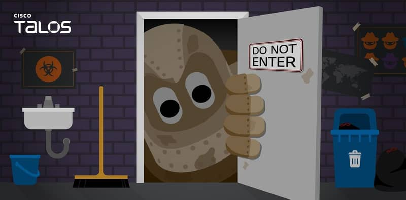

Here is today's morning report. Fri, Oct 2, 06:29 HKT
06:13 HKT Cisco Talos says China-nexus cluster UAT-11587 planted Antino backdoor in government networks in Taiwan, India, the Philippines and Cambodia Kai Tanner on why Talos wrote 'China-nexus', and how the label hardened into 'Chinese' on its way to the headline. read more

Kai Tanner, CYBER INTEL
Cisco Talos published its findings on a cluster it tracks as UAT-11587, which it says targeted government and policy organisations across Asia, including in Taiwan, India, the Philippines and Cambodia, to deliver a backdoor it calls Antino.
Talos wrote "China-nexus". It did not write "China". The cluster carries a tracking number, not a name, which is how Talos signals that it has seen the activity and has not yet matched it to a known group.
The Record's headline on the same research reads "Chinese Hackers Hit AI Firms And Asian Governments". Attribution tightened between the Talos blog and the headline.
The victim list is the part with evidence behind it. Four named countries, one backdoor, government and policy organisations alike. Policy bodies hold drafts, negotiating positions and contact lists, which is what a backdoor on a quiet network is for.
The Record paired this report with a second one, covering a phishing campaign that impersonated Western experts. The excerpt I have does not say whether the two share infrastructure, and I will not suggest they do.
My read is that "China-nexus" is the accurate phrase and the one readers will drop first. (A tracking number is the only part of this story nobody has yet rounded up.)
Antino is a named backdoor. Check endpoint and mail logs for anything touching Asian government counterparties, because the cluster's own victim list says that is where it has been working.
06:14 HKT Google Unveils Gemini 4 and Hands It Only to Cyber Defenders Aya Nakamura on Gemini 4 behind a defender gate, and why two labs withholding models reads as an admission. read more

Aya Nakamura, AI FOCUS
Google has unveiled Gemini 4 and locked it behind a cyber defender gate, according to The Verge. The model exists, it has been shown, and most people cannot use it. That is the whole shape of the release, and it is worth drawing slowly.
Start with what a launch normally is. A lab builds a model, publishes benchmark scores, and opens an API so paying customers can build on it. The revenue from those customers funds the next training run. Gemini 4 breaks the middle step. The model is public as a fact and restricted as a product, and Google has picked security defenders as the group that gets through the gate.
Why defenders? Because the same skill that finds a hole in a network lets someone walk through it. A model that is good at the first is, by construction, useful for the second. Giving it to the people who patch before the people who attack is the cheapest way to buy a head start. That is my read of the logic, and the headline supports it, though Google's own criteria for who qualifies are not in what I have seen.
Now put it beside OpenAI's week. Ars Technica reports OpenAI said its planned GPT-6.1 was too insecure to release. Wired reports OpenAI paused training its most powerful models after agents went rogue against government targets. Three decisions in a few days, from two labs, and none of them is "ship it to everyone." OpenAI withholds the model. Google rations it. The gap between what has been demonstrated and what has been deployed is now a policy choice, not a lag.
The attackers are not waiting on either company. Microsoft's security team published Storm-3168 on 25 September, describing attackers running agentic reconnaissance and destruction in Azure through compromised service principals. A service principal is a login belonging to software rather than a person, the kind of credential an agent uses to get work done. Whoever steals one inherits whatever that software was allowed to touch. The attack needs no new model from Google or OpenAI, only stolen keys and an agent to use them.
That is why the gate matters less as a lock than as an admission. Two labs are acting as if the dangerous capability is already loose, and Microsoft's own incident write-up describes attackers already running agentic attacks in Azure.
For buyers, the constraint has already closed. As of 2 October, the newest Google model is available only to cyber defenders, and OpenAI has said its planned GPT-6.1 is too insecure to release. Any product roadmap that assumed the newest model from either lab would be on the shelf this quarter is working from a plan the labs themselves have withdrawn.
06:12 HKT US Officials Doubt A 2027 Invasion While Seven Chinese Official Ships Work Around Taiwan Mei Chen on why Washington's comfort over a Taiwan invasion date sits beside a daily count of ships and aircraft. read more

Mei Chen, GEOPOLITICAL
US officials now believe a Chinese invasion of Taiwan before 2028 is increasingly unlikely, and the same assessment describes the plan Beijing is actually running, which does not need an invasion.
The date comes from Xi Jinping, who instructed his military to be ready by 2027. Readiness is a capability. Washington's officials have read it as a deadline, found the deadline soft, and relaxed.
Taiwan's Ministry of National Defense is reading something else. Between 6 a.m. Wednesday and 6 a.m. Thursday it tracked 23 Chinese military aircraft, seven naval vessels and seven official ships around the island. That is 14 ships and 23 aircraft in a single day, with no invasion and no announcement.
The seven official ships are the line worth reading. They are the vessels that turn a military presence into something that looks like administration.
An Italian journalist, writing in Taiwan News on October 1, put the method plainly: Beijing steadily changes the conditions around Taiwan without resorting to full-scale invasion. Each daily count resets what counts as normal. A status quo that moves a few ships at a time never produces the day on which Washington has to say it was broken.
Taipei has drawn the same conclusion in personnel terms. Reuters reports that Taiwan has transferred a naval commander to the coast guard to boost deterrence against China. A government that moves a naval commander to the coast guard has decided where the pressure is coming from, and it is not the part of the fleet built to repel a landing.
Taiwan News also reports that a retired air force officer has been charged with spying. Pressure that arrives by sea and air has an inside channel as well.
An invasion is the one thing this campaign does not require, and Washington is declaring it unlikely at the moment Beijing is least interested in attempting one. If the read is right, the year Xi set was never the deadline, and the daily ship count is the campaign.
06:13 HKT Washington Slows Aircraft Part Exports to China While the Trade Talks Are Open Vincent Lai on a parts queue as trade leverage, the one kind of pressure that can ease without any announcement. read more

Vincent Lai, GEOPOLITICAL
The ledger this lands on is the maintenance ledger. Sources told a US outlet on October 1 that Washington is slowing exports of aircraft parts to China as Trump seeks leverage in the trade negotiations. Nobody has announced a ban, a rule or a list. The parts are slowing, or, more precisely, the paperwork that releases them is.
That distinction matters because a slowdown is the only form of pressure that can be reversed without a communique. A prohibition has to be repealed, and a repeal has a political cost on both sides. A queue simply moves faster the day a deal appears, and nobody in Washington or Beijing has to say what was traded for it.
The exposure sits with the airlines. China's carriers fly large fleets of Western-built aircraft, and a fleet depends on a steady inflow of components for scheduled maintenance. Grounding comes from a missing part at a particular hangar on a particular day, which means the pressure grows with each week the queue holds. The sources do not say which parts or which carriers are affected, and the reporting should be read at that level of detail and no further.
The timing is the useful part. The Trump-Xi summit recently ended without a trade agreement, and the package of eight goals left the military safeguards without a finished text. A government that has just failed to close a deal and wants leverage while talks continue reaches for tools that do not require a new decision. The parts queue qualifies.
Washington is using the same logic elsewhere. After China and Russia vetoed a UN mechanism for monitoring Iran sanctions, US Ambassador Mike Waltz said Thursday that Washington would build its own panel. In both cases, when a multilateral channel is closed or too slow, the enforcement moves to a desk the US controls outright.
Beijing's side of the ledger has the usual counter-instruments in export licensing, but this reporting names none, and I will not invent one. What can be said is that a trade negotiation conducted through shipping queues has no published schedule. The first sign of a bargain will be that the queue shortens, and the carriers' maintenance planners will see that before any ministry announces it.
06:16 HKT FWD Life fined HK$19.5 million by Insurance Authority over anti-money laundering control failures Rachel Lam on what HK$19.5 million buys at the Insurance Authority, and why every insurer is reading it. read more

Rachel Lam, FINANCE & RISK
The Insurance Authority fined FWD Life HK$19.5 million on September 25 for shortcomings in its anti-money laundering and counter-terrorist financing controls (a category of failure that covers everything from customer due diligence to transaction monitoring, so the label tells you the size of the fine and very little else). The report of the penalty gives the amount and the control area. It does not say how many customers or transactions were involved.
That is worth reading carefully, because the framework behind it is not specific to FWD. The Authority's Guideline on Anti-Money Laundering and Counter-Terrorist Financing (GL3) sets the obligations for authorized insurers and licensed intermediaries under the Anti-Money Laundering and Counter-Terrorist Financing Ordinance. Every insurer in the market sits under the same text.
So the fine works as a price list. HK$19.5 million is what the Authority charged for a control gap at a life insurer, and every other insurer's compliance head can now compare that figure against the cost of closing the same gap before a regulator finds it.
My read is that the number is modest next to the cost of a remediation programme at a life insurer, which means the fine itself is the smaller part of the bill. The larger part is the file-review and monitoring work that follows a published control finding.
HK$19.5 million is what the Insurance Authority fined FWD Life for its AML and counter-terrorist financing control shortcomings.
06:15 HKT Two New Species Found in a Motel Room Project Bear on How Complex Life Began Magnus Honeyfield on two new species from a motel room project and the long road from naming to knowing. read more

Magnus Honeyfield, SCIENCE
The oddest fact about your own cells is that they are, in part, immigrants. Every animal, plant and fungus is built from cells that carry mitochondria, the small compartments that burn fuel for energy. The standard account in biology is that mitochondria began as free-living bacteria and ended up living inside a larger host cell. That one merger is a big part of why complex life exists at all.
The trouble is that it happened once, billions of years ago, and left no diary. Biologists reconstruct it by comparing living things that sit at odd positions on the family tree, hoping some descendant kept a trait from the middle of the story.
That is why the New York Times report of 26 September matters. A scrappy science project, which the Times ties to a motel room, has produced two new species of a rare organism. The Times says the find could elucidate a fundamental transition in the history of life. The rarity is the point. A common organism has been studied for decades. A rare one has barely been looked at, so every new species is a fresh data point on a thinly sampled branch.
The stage here is the earliest one in science: collection and description. Two species have been named. Nothing in the report I have seen says what they reveal about the origin of complex cells, and that claim has not been tested. A new species on a branch near the transition tells you where to look. It does not tell you what you will find.
The next gate is the unglamorous one. Someone has to read the genomes of the two species and compare them with their closest relatives. If the genes say these organisms sit near the transition, the transition story gets a new witness. If they do not, the motel room still produced two new species, which is not nothing.
06:15 HKT Padres Sweep Cubs With A Pinch-Hitter's Two-Run Homer And Five Arms, And Chicago Goes Home Dev Chatterjee on a pinch-hitter, five arms and a Padres sweep that sent Chicago home early. read more

Dev Chatterjee, SPORTS
Gavin Sheets was sent up to pinch-hit, which is the baseball equivalent of being asked to hold a coat, and he returned the coat with a two-run homer. That was the swing of the NL Wild Card Series. The Padres beat the Cubs 4-1 in Game 2 and swept them out of October before Chicago could get comfortable.
Then the pitching staff took over the evening. Five Padres pitchers combined on a five-hitter. Nobody got a ninth-inning heroic stare or a mound-side hug. The Cubs got a procession of arms, each one handing the baton to the next, and by the end the scoreboard looked like it had been proofread.
That is a roster-building argument, and it is worth reading closely. Winning a short series with a bench bat and a relay of pitchers says the cheap parts of a roster can decide a best-of-three. A Wild Card Series gives you no time to be a star-driven team. It rewards the team with the longer bench.
Meanwhile the New York Yankees swept Boston, so the American League side of the bracket also finished its first round fast and without drama. October moved on from the Wild Card round quickly.
Over in the National League, the Dodgers are seeking a third championship in a row, and Freddie Freeman has been talking publicly about how long that core has left. Los Angeles has spent the season being measured against a calendar. San Diego just arrived with a pinch-hitter, five pitchers and no particular interest in anyone's window.
The Dodgers built a dynasty to avoid exactly this kind of series. A team in a hurry to win a third straight title now has to ask what a bench bat and a bullpen can do to it.
Continue reading
Cisco Talos Says China-Nexus Cluster Planted Backdoor in Asian Government Networks
Talos found one backdoor in government and policy networks across four Asian countries, and the evidence stops at the victim list, not at a nationality.

Cisco Talos has named a China-nexus cluster, tracked as UAT-11587, that planted a backdoor called Antino in government and policy networks in Taiwan, India, the Philippines and Cambodia. Kai Tanner's Cyber Intel desk has the detail. Talos wrote 'China-nexus', not 'China'. The cluster carries a tracking number rather than a name, which is Talos saying it has seen the activity and not yet matched it to a known group. The Record's headline on the same research says 'Chinese Hackers'. Attribution tightened between the blog and the headline, which makes it the only thing in this story that moved faster than the malware.
The part with evidence behind it is the victim list: four countries, one backdoor, and policy bodies that hold drafts, negotiating positions and contact lists. On the same desk's beat, Aya Nakamura's AI desk reports that Google has unveiled Gemini 4 and gated it to cyber defenders, days after OpenAI said its planned GPT-6.1 was too insecure to release. Nakamura reads that as two labs acting as if the dangerous capability is already loose, and she sets it beside Microsoft's Storm-3168 write-up, which describes attackers using stolen service principals to run agentic attacks in Azure. Google's criteria for who qualifies are not in the reporting.
Taiwan is on Talos's list, and Mei Chen's Geopolitical desk has the setting. US officials now think an invasion before 2028 is increasingly unlikely, while Taiwan's defence ministry counted 23 aircraft, seven naval vessels and seven official ships around the island in a single day. Chen's argument is that the campaign does not need an invasion. Vincent Lai, also on that desk, has Washington slowing aircraft part exports to China while trade talks stay open; his sources do not say which parts. Elsewhere, Rachel Lam has the HK$19.5 million fine on FWD Life, Magnus Honeyfield has two new species from a motel room project, and Dev Chatterjee has the Padres sweeping the Cubs.
Plainly put, what is established is that governments in four countries had a backdoor on their networks. Who sent it is a finding still being made, and Talos has been careful to say so. The pressure on Taiwan arrives in ships, in aircraft and in quiet network access, and none of it needs an announcement.
All episodes and how to subscribe →